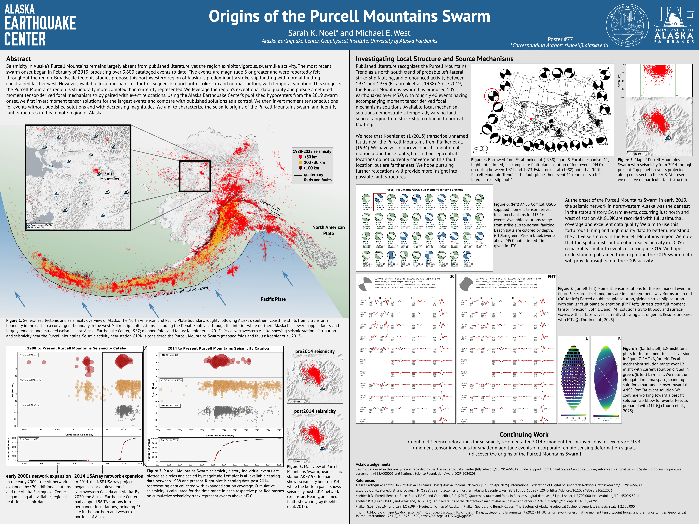
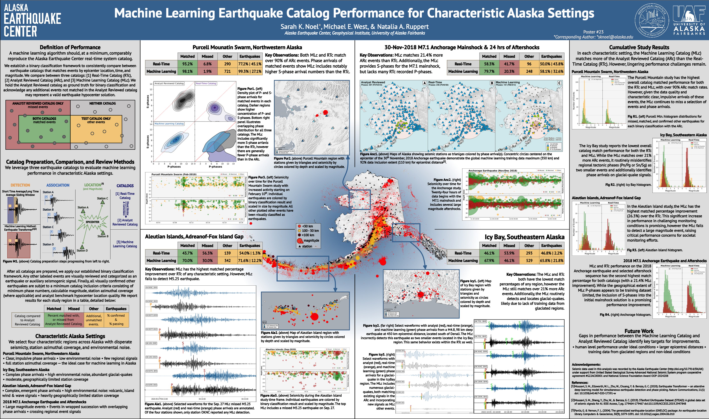

---
layout: full
title: Abstracts & Posters
subtitle:
---				

<!-- Two, Image and Text -->
<section id="two" class="wrapper alt style2">
    <section class="spotlight">
        <div class="image"></div><div class="content">
            <header>
            <h3>Training and Performance of Machine Learning Pickers with Alaska-Specific Data</h3>
            <p>Sarah K. Noel, Michael E. West<br />
                2025 SSA Annual Meeting in Pasadena, CA</p>
            </header>
            <p style="font-size: 0.85em;">Globally pre-trained machine learning (ML) earthquake phase-detection algorithms 
                continue to gain research popularity and are routinely used to generate earthquake catalogs with thousands 
                of additional events. These pre-trained algorithms promise broadscale regional transferability and application 
                in real-time monitoring. In Alaska, however, we find that while globally pre-trained ML models offer 
                improvements over traditional detection methods, these ML models underperform our performance measures when 
                compared to seismic data analysts (Noel & West, 2025). To address observed underperformance, we develop a 
                location-specific training dataset for Alaska. We curate signals from 2019 through 2023 from permanent 
                installation, real-time, seismic stations operating in Alaska and western Canada. We retrain ML architectures 
                and apply our resulting models to the full 2024 calendar year of network data. Additionally, we prepare 
                catalogs using models pre-trained on community datasets. We compare each 2024 catalog to our benchmark 
                Alaska Earthquake Center analyst-reviewed catalog through a binary classification framework. Lastly, we 
                apply a minimum catalog inclusion criteria based on Alaska Earthquake Center analyst review standards, 
                establishing a one-to-one performance comparison. Our approach aims to evaluate the performance differences 
                between training datasets and established ML architectures to develop an earthquake detection approach 
                with appreciable benefits for Alaska.
            </p>
        </div>
    </section>
    <section class="spotlight">
        <div class="image"></div><div class="content">
            <header>
            <h3>Origins of the Purcell Mountains Swarm</h3>
            <p>Sarah K. Noel, Michael E. West<br />
                2025 SSA Annual Meeting in Baltimore, MD</p>
            </header>
            <p style="font-size: 0.85em;">Seismicity in Alaska's Purcell Mountains remains largely absent from published 
                literature, yet the region exhibits vigorous, swarmlike activity. The most recent swarm onset began in 
                February of 2019, producing over 9,600 cataloged events to date. Five events are magnitude 5 or greater 
                and were reportedly felt throughout the region. Broadscale tectonic studies propose this northwestern region 
                of Alaska is predominantly strike-slip faulting with normal faulting constrained farther west. However, 
                available focal mechanisms for this sequence report both strike-slip and normal faulting with temporal 
                variation. This suggests the Purcell Mountains region is structurally more complex than currently represented. 
                We leverage the region's exceptional data quality and pursue a detailed moment tensor-derived focal mechanism 
                study paired with event relocations. Using the Alaska Earthquake Center's published hypocenters from the 
                2019 swarm onset, we first invert moment tensor solutions for the largest events and compare with published 
                solutions as a control. We then invert moment tensor solutions for events without published solutions and 
                with decreasing magnitudes. We aim to characterize the seismic origins of the Purcell Mountains swarm and 
                identify fault structures in this remote region of Alaska.
            </p>
        </div>
    </section>
    <section class="spotlight">
        <div class="image"></div><div class="content">
            <header>
            <h3>Machine Learning Earthquake Catalog Performance for Characteristic Alaska Settings</h3>
            <p>Sarah K. Noel, Michael E. West, Natalia A. Ruppert<br />
                2024 SSA Annual Meeting in Anchorage, AK</p>
            </header>
            <p style="font-size: 0.85em;">Globally pre-trained machine learning (ML) earthquake phase-detection algorithms 
                promise broadscale regional transferability in addition to real-time monitoring applications. These algorithms 
                continue to gain research popularity and are routinely used to generate earthquake catalogs with thousands 
                of additional events. We apply a globally pre-trained ML earthquake phase-detection algorithm to four different 
                characteristic regions and sequences to generate a ML earthquake catalog. We compare the ML catalog with 
                the Alaska Earthquake Center's real time (RT) and analyst-reviewed (AR) catalogs. We establish a binary 
                classification framework to compare the RT and ML catalogs to the AR catalog. We visually assess and label 
                additional RT and ML events as earthquakes or other signals. Finally, we apply a minimum catalog inclusion 
                criteria based on Alaska Earthquake Center analyst review standards to additional, visually-confirmed RT 
                and ML catalog earthquakes, establishing a one-to-one performance comparison between catalogs. For each 
                region, we find the ML catalog provides a consistently higher match with the AR catalog than the RT catalog. 
                However, each region's ML catalog introduces additional complications ranging from misidentification of 
                non-earthquake signals to missed detection of large magnitude, felt earthquakes. These discrepancies warrant 
                further training dataset scrutiny and suggest the establishment of a location based training dataset is 
                necessary for consistent and reliable ML phase detection performance across the Alaska seismic network.
            </p>
        </div>
    </section>
        <section class="spotlight">
        <div class="image"></div><div class="content">
            <header>
            <h3>Evaluation of Machine Learning Assisted Earthquake Phase Detection Performance in Different Tectonic 
                Regions and Environmental Noise on the Alaska Seismic Network</h3>
            <p>Sarah K. Noel, Michael E. West<br />
                2023 SSA Annual Meeting in San Juan, PR</p>
            </header>
            <p style="font-size: 0.85em;">Many available machine learning (ML) phase-detection algorithms promise real-time 
                monitoring applications and to be broadly transferable across different seismic regions when trained on a 
                global dataset. One such algorithm, Earthquake Transformer (EQT), developed by Mousavi et al. 2020, is 
                repeatedly used by the research community to generate localized earthquake catalogs in various tectonic 
                regions. We systematically apply the global pre-trained EQT package to disparate seismogenic regions in 
                Alaska as a first assessment of ML-assisted, phase-picking competency on the Alaska Seismic Network.<br />
                We select three regions with varying station azimuthal coverage, environmental noise, and seismicity characteristics 
                to evaluate overall ML performance. We define the minimum performance goal as reproducing the Alaska Earthquake 
                Center's (AEC) existing real-time catalog. The three chosen regions are (1) Purcell Mountain in northwestern 
                Alaska, (2) Andreanof and Fox Islands along the Aleutian Island chain, and (3) Yakutat and Icy Bay in southeastern 
                Alaska. The Purcell Mountain region represents near-ideal ML conditions with moderate magnitude, shallow-crustal 
                events recorded with good azimuthal station coverage and low environmental noise. The Aleutian and Yakutat/Icy 
                Bay regions incorporate poor azimuthal station coverage and varying earthquake source characteristics in 
                addition to volcanic and glacial signals, respectively. Application of EQT in each region produces an alternative 
                earthquake catalog that is directly comparable to both the AEC’s augmented STA/LTA monitoring catalog and 
                analyst-reviewed catalog. Leveraging all three catalogs provides insights into the ability of ML to accurately 
                detect seismic arrivals in the wide range of conditions present in Alaska.  
            </p>
        </div>
    </section>
</section>